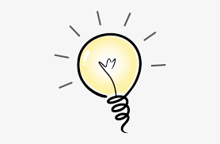

Almost getting there!
What did I learn today?

According to the information and exercises that you have reviewed today. With five complete ideas, write in your notebook the most important rules or recomendations to pay attention every time that you use Simple Present Tense. Then click the bottom "Ideas to include" to see our sugestion.